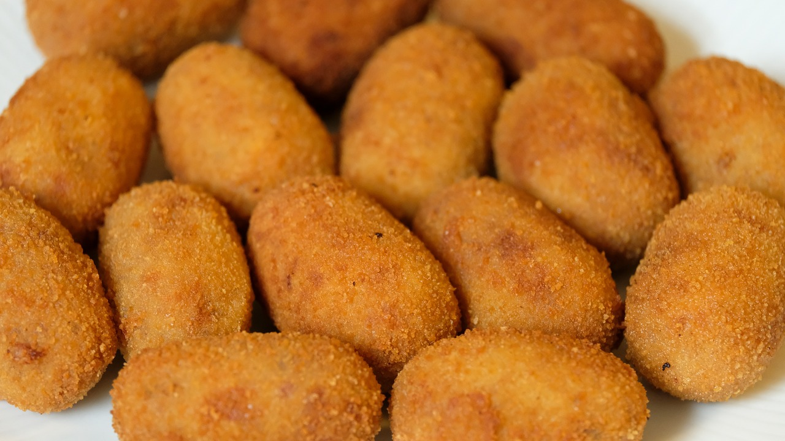

Spanish ham croquettes
Ingredients
- 1/2 cup/100 mL chicken broth
- 8 tablespoons olive oil
- 3/4 cup/107 grams flour
- 1 1/2 cups/350 mL milk
- 1/2 teaspoon nutmeg
- Dash of ground pepper
- 1/2 cup ham (very finely hand-minced, so it can be mixed thoroughly with the dough)
- 2 eggs (lightly beaten with 2 teaspoons water)
- 1 cup breadcrumbs (for coating)
- 1 bottle Spanish olive oil (for frying)
Preparation
- Gather the ingredients.
- Heat the 8 tablespoons olive oil in a small saucepan over medium heat. Add the flour and cook for 3 minutes,
stirring
constantly. Gradually add the milk and the chicken broth, stirring without stopping. This can take up to 30
minutes.
- Next, add the nutmeg, salt, and pepper to taste. Cook over medium heat, stirring constantly until the sauce
is thickened
and smooth.
- Add the minced ham and continue to cook for about 2 to 3 minutes on low heat, continuing to stir. Remove
from heat.
Taste and adjust seasoning if necessary.
- Allow to cool for 5 to 10 minutes and refrigerate at least 3 hours until mixture is cold. If you are
preparing a day or
so ahead, you can cover the mixture tightly and keep refrigerated until you are ready to fry the croquettes.
- Pour the breadcrumbs into a small, wide bowl.
- Beat the eggs with water in a small, wide bowl.
- Cover your hands in flour, then divide the mixture into 1-inch balls and set on a plate, so that they are
not touching.
- Pour enough olive oil in a medium-to-large frying pan to cover 1/2-inch deep. Heat the olive oil for frying
to about 180°C.
- Dip the croquettes in the beaten egg and coat with crumbs by rolling in the bowl.
- Place the croquettes in the hot oil and fry quickly, turning several times, until golden.
- Remove the croquettes with a slotted spoon and set on a paper towel to absorb the excess oil.
- Serve immediately. If croquettes will not be served immediately, place in a warm oven (100°C) for up to 30
minutes.